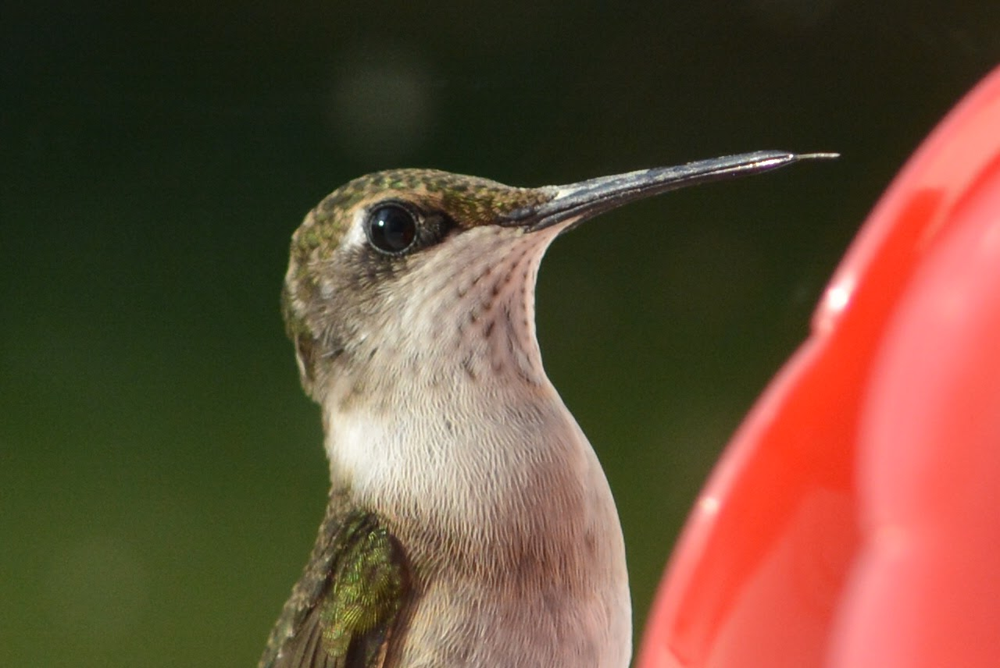
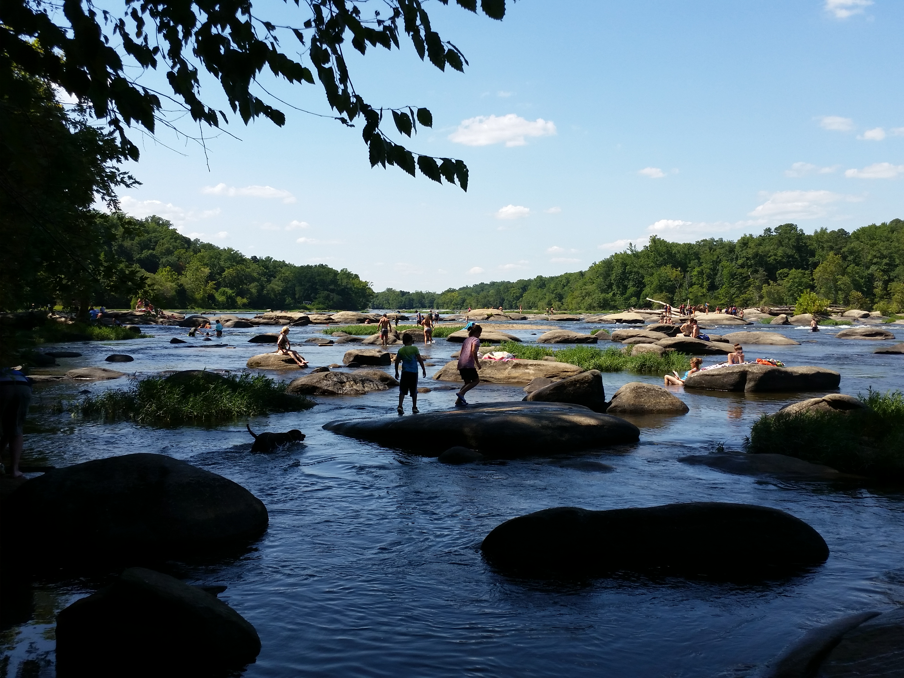

Hi! I'm Julia Bristow, a student at George Washington University studying computer science. I graduated from Monacan High School in Chesterfield, VA last June, and I enjoy reading, hiking, travelling, and photography. I also love animals, and before I moved to D.C. I volunteered at an animal rescue group by taking care of the rescued dogs.
Photography




Documentary made by me!
Last year for my senior project, I (along with 4 other people) created an 8-minute documentary about the importance of studying liberal arts and humanities and how it benefits students. We did everything from setting up interviews to filming and editing over a period of about 3 months. Watch the documentary below!